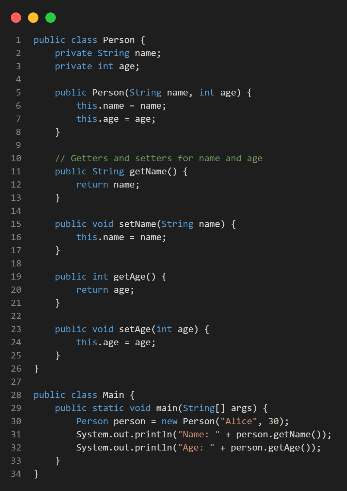
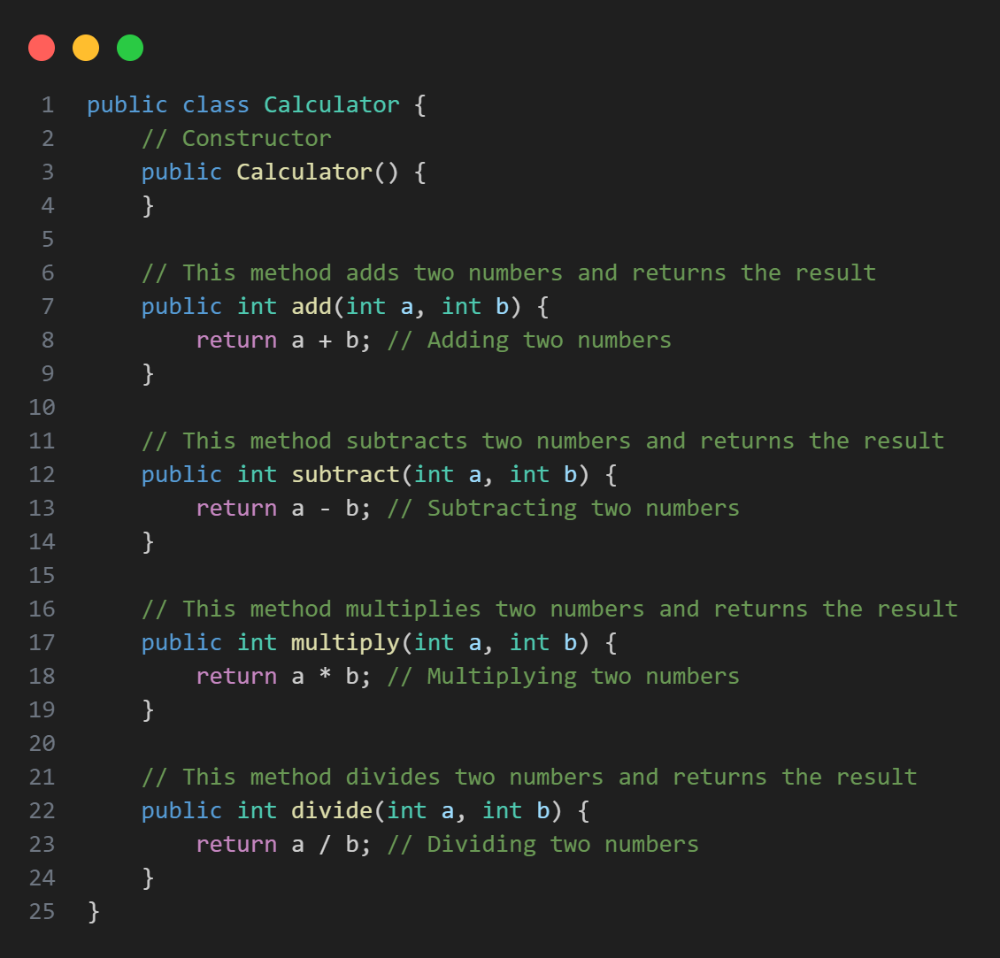
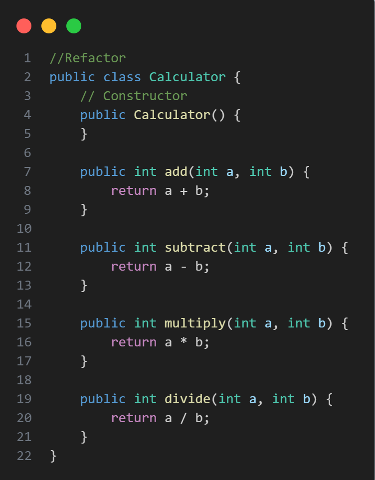
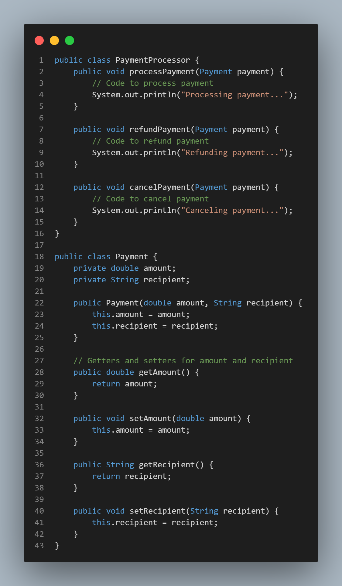
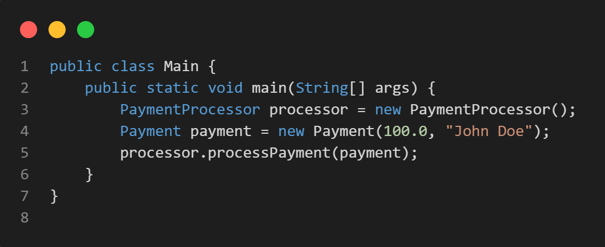
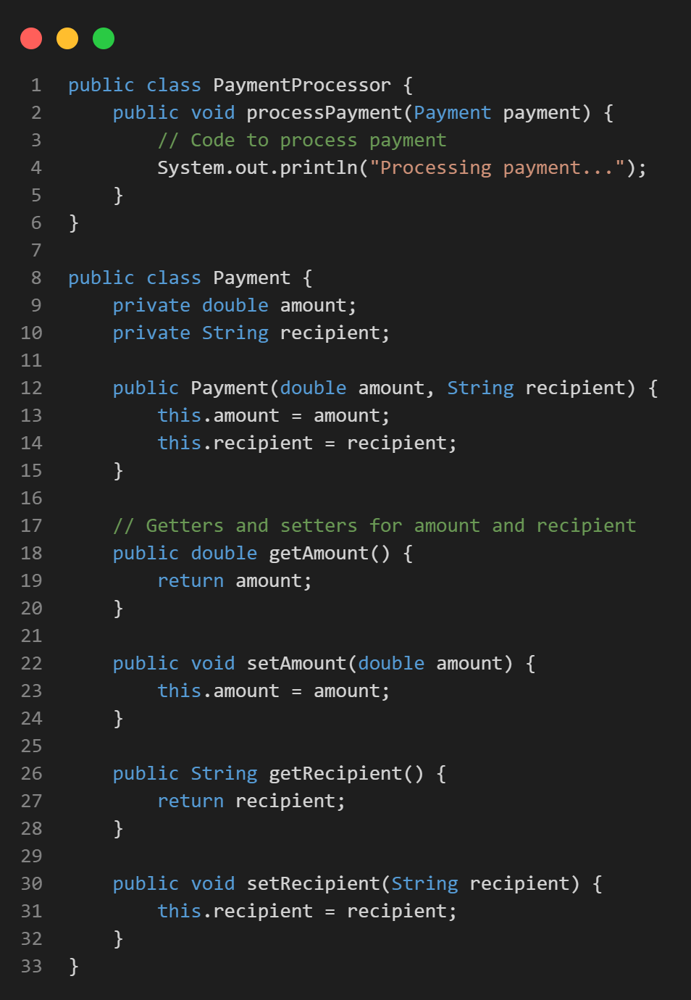
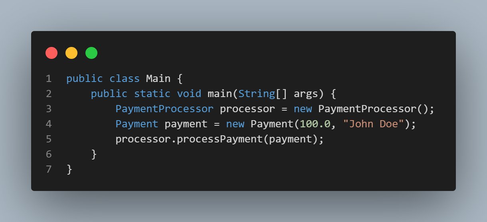
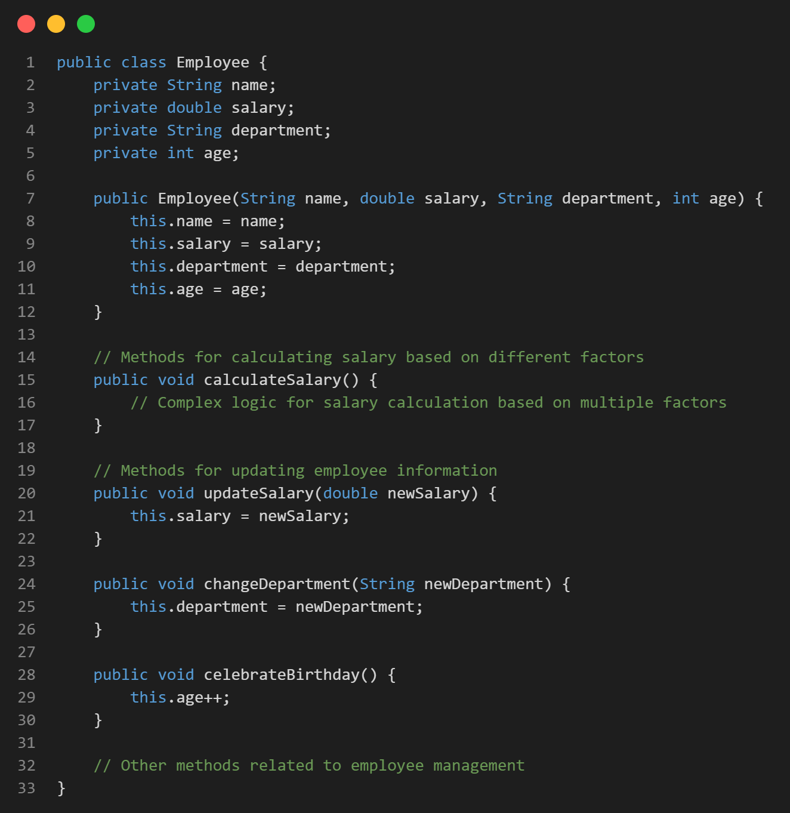

Code Smells
Dead Code
Data Class
Lazy Class
Duplicate Code
Comments
Speculative Generality
Divergent Change
Shotgun Surgery
Parallel Inheritance Hierarchies
Dead Code
Sebuah bagian dari code yang tidak berguna atau tidak lagi dipakai(Obsolete) ini bisa metode, field, class, parameter dan variable di dalam code.
Reason for the Problem

Disini ada unused methods dan variables di dalam classnya yang tidak dipakai di main ataupun di class lain.
Treatment

Remove dead/unused methods and variables, Utamakan pembuatan IDE yang bagus untuk prevensi Dead Code dan deteksinya.
Data Class
Data Class adalah sebuah Bad Code Smell tipe Dispensables, dimana metode di class tersebut hanya terdiri atas Getter dan Setters sebuah metode akses data di dalam class yang bersifat "Crude", classnya tidak memiliki fungsionalitas tambahan dan tidak bisa memakai data di dalam kelasnya secara independent.
Reason for the Problem

Di code ini class Person hanya memiliki Getter dan Setter sehingga tidak bisa di justify sebagai class yang bersifat functional karena merupakan container class only, atau disebut sebagai class yang tujuannya hanya untuk menampung dan manage object, dimana metodenya bersifat manipulasi data seperti menambah, mengurang, atau mengakses data tersebut seperti sebuah Array, List, dll.
Treatment

Kami melakukan encapsulate field yaitu sebuah refactoring method dimana kami mengimplementasi prinsip Encapsulapsi OOP sehingga data/field di dalam class dibuat private atau diencapsulate di dalam metode sendiri dan memberi metode akses untuk memakai data tersebut tersebut sehingga saat object person dibuat statenya tidak bisa diganti, ini juga dibantu dengan deleting method setnya supaya tidak dapat diubah.
Lazy Class
Sebuah Bad Code Smell Dispensables dimana sebuah Class yang bersifat tidak penting, ini karena class hanya memiliki method dikit atau isinya sedikit. Jadi, class yang bersifat lazy tersebut berkontribusi dikit terhadap fungsionalitas code atau tidak sama sekali, bisa juga disebut class yang tidak bertanggungjawab.
Reason for the Problem

Class calculator merupakan lazy class karena di dalam class tersebut hanya memiliki 2 metode aritmatika yakni tambah dan kurang, merupakan metode yang simple dan tidak perlu class yang dedicated untuk diimplementasikan.
Treatment

Kami implement inline class method untuk fix yaitu sebuah metode refactoring dimana semua metode di dalam 1 class dipindah ke class lain karena classnya tidak berkontribusi apapun terhadap code, disini kami move methods dari calculator ke dalam main.
Duplicate Code
Duplicate Code adalah sebuah Dispensables Bad Code Smell, dimana ada 2 Fragmen code yang kelihatan sama atau mirip, ini bisa dilihat dari 2 fragmen code yang struktur dan hasil kerjanya sama hanya nama dari variable/data yang dipakai diganti atau 100% similar.
Reason for the Problem

Isi dari method CalculateArea dan CalculatePerimeter di class Square dan Rectangle bersifat mirip karena kedua fragmen melakukan kalkulasi luas dan perimeter hanya di dalam class berbeda dan dengan fields yang berbeda, tetapi melakukan hal yang sama.
Treatment

Kami memakai Pull Template Field, dimana method yang sama dipull dari class dan ditaruh di dalam superclass/interface dan nanti diimplementasikan di dalam class yang memakai method tersebut. Ini menjaga supaya mengurangi code duplication dan menggabungkan steps yang sama di dalam template dan mengirim yang berbeda di dalam subclass yang mengimplementasikannya.
Comments
Comments adalah sebuah bad code smell Dispensable dimana, method dijelaskan secara berlebihan dengan comments.
Reason for the Problem

Code ini diisi dengan comments yang bersifat menjelaskan fungsi setiap method secara berlebihan, methods di dalam code merupakan metode aggregasi standar seperti add,substract,dll tidak perlu penjelasan dengan comments. Comments seperti ini yang menjelaskan method yang straightforward tidak diperlukan.
Treatment

Remove Comments di dalam code tersebut bila metode yang code jelaskan bersifat straightforward, dan bila ada method yang bersifat ambigu dijelaskan pakai code dengan singkat atau restructure method supaya jelas.
Speculative Generality
Speculative Generality adalah sebuah Dispensables bad code smell, dimana sebuah fragmen dari code dibuat karena spekulasi untuk membantu code di depan, tetapi akhirnya fragmen code yang dibuat tidak dipakai sama sekali.
Reason for the Problem


Di dalam Payment Processor ada method Refund dan Cancel Payment, tetapi method tersebut pada akhirnya tidak dipakai sama sekali dan hanya merupakan hasil dari spekulasi developer bahwa bakal diperlukan kedua method tersebut. Dimana yang dipakai hanya Processing payment di dalam main class untuk membuat class Payment baru.
Treatment


Kami remove unused methods di dalam class PaymentProcessor karena tidak dipakai sama sekali di dalam code.
Divergent Change
DIvergent Change adalah sebuah Change Preventer Bad Code Smell. Dimana saat melakukan perubahan anda harus melakukan banyak perubahan terhadap code yang bersifat useless atau tidak terkait dengan yang anda sedang ubah. Misalnya ingin tambah productType baru anda harus ganti method cari,display,dan order Product. Merupakan hasil dari "Copypasta Programming" atau struktur code yang tidak bagus.
Reason for the Problem

Disini class Employee memiliki terlalu banyak tanggung jawab, seperti kalkulasi dan update Salary, perubahan department dan celebrasi Ulang Tahun, Sehingga nanti saat mengganti sebuah hal di class tersebut harus mengganti banyak hal juga di dalam classnya, membuat codenya susah untuk maintain, dimengerti dan diganti.Karena classnya memiliki terlalu banyak tanggung jawab.
Treatment

Kami memakai Extract Class technique untuk mengurangi tanggung jawab class Employee, dimana method/field dari sebuah function di dalam class tersebut di extract dan dibikin class baru. Disini hasilnya ialah class EmployeeProfile dimana dia mengandalkan fungsionalitas dari updateSalary, dan calculateSalary, beserta data Department dan fungsionalitasnya, ada class Birthday service juga untuk mengandalkan fungsionalitasnya BirthdayCelebration. Sehingga EMployee class hanya fokus untuk manage data setiap employee.
Shotgun Surgery
Shotgun Surgery adalah Change Preventers Bad Code Smell dimana code yang dibuat saat ingin diganti diperlukan melakukan berbagai perubahan kecil juga untuk menghasilkan perubahan yang diinginkan seperti sebuah shotgun yang memiliki banyak pellets di dalamnya yang meliputi sebuah shot, setiap kali anda change sesuatu di code anda, banyak perubahan juga harus dilakukan untuk 1 change.
Reason for the Problem


Di dalam code ini, Bila ingin melakukan perubahan di Item class anda juga perlu ubah SHoppingCart class seperti menambah method baru atau variable baru, secara automatis harus diupdate class ShoppingCart, seperti contoh bila ditambahin sistem discount di dalam item, secara automatis harus mengganti shoppincart supaya dapat akomodasi persentase discount dan harga setelah discount item tersebut, jadi bila logic codenya diubah atau ditambahkan method/variable baru di dalam sebuah class, class lainnya yang coupled dengan class yang diganti harus juga diupdate.
Treatment


Disini dia mengambil method logic dari kalkulasi totalPrice di main dan di ShoppingCart class, dia membuat method baru dari logic tersebut menjadi sebuah CalculateTotalPrice, sehingga bila ingin mengganti logic kalkulasi price tinggal ganti di fucntion CalculateTotalPrice, ini nanti akan mengurangi tight coupling antara classnya dan menghasilkan class ShoppingCart yang fungsinya untuk manage items, Items sebagai identitas setiap data item. Sehingga tidak perlu saling update class saat ingin merubah sebuah hal dari class.
Parallel Inheritance Hierarchies
Parallel Inheritance Hierarchies adalah sebuah Change Preventers Bad Code Smell, dimana code disaat membuat subclass dari class harus membuat subclass baru untuk class berbeda, sehingga saat ingin mengganti sebuah class, class yang lainnya juga harus dilakukan perubahan yang sama karena kedua class melakukan hal yang sama tetapi methodsnya bisa berbeda. Artinya kedua class memiliki hierarki yang sama atau Parallel.
Reason for the Problem


Pada code teresbut kita melihat dua hierarki: satu untuk widget GUI (kelas Widget dan Button) dan satu lagi untuk objek data (kelas DataObject dan DataButton). Mereka memiliki atribut dan metode yang mirip namun mewakili konsep yang berbeda (elemen GUI vs. objek data). Duplikasi ini membuat pemeliharaan menjadi sulit dan dapat menyebabkan inkonsistensi jika perubahan tidak disinkronkan antara hierarki paralel.
Treatment

Kami memperbaiki masalah pewarisan paralel dengan menggunakan komposisi, di mana satu instance dari hierarki kelas digunakan sebagai referensi untuk hierarki kelas lainnya. Dalam kasus ini, Button class menerima instance DataObject sebagai parameter constructor. Ini memungkinkan Button class untuk berinteraksi dengan DataObject tanpa mewarisi langsung dari kelas DataObject. Dengan demikian, hierarki yang berjalan paralel dihapuskan, mengurangi duplikasi kode dan meningkatkan kohesi dan fleksibilitas kode